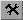

The Behaviour Function Editor Plugin (BHAV)
Behaviour functions contain the code that controls in a detailed way what will happen when a Sim goes about his life. They cover everything from how he handles the current object to what happens when he starves to death. From NightLife onwards, some of the behaviour is scripted in LUA scripts, which can be called from BHAVs.
Headers
These values refer to the BHAV as a whole
Filename You can put a descriptive name in here Format Mainly affects how many lines you can have in your BHAV. Best not to change the setting for no good reason. Tree Type Whether called from the function table, or a menu interaction etc. Doesn't see to make any difference in how it runs Header Flag Don't know Tree Version Don't know Cache Flags Do not touch (advice from MaxoidTom) Arg count Number of parameters used in this BHAV. They don't necessarily need to have been passed in from the calling BHAV. If you have so much as referred to a Params 4 in the listing, then your Arg count must be set to at least 5 Local var count Every time you use a local variable, you need to increase this count. Variables start from 0. If your highest variable is Local 4, then this count must be set to 5, even if you didn't use Locals 0-3
.
Instruction Settings
These values refer to the currently selected line (node)
Opcode This refers to the number of the function call you will make from this line. It could be a BHAV in this package, another package, or it could be one of the functions built into the core. The button next to it opens a tabbed file list where you can pick which function you wish to call. All operations are via functions, there are no built in commands. Node Version Don't bother to change this unless you know why. It makes a difference to what the operands mean for some opcodes True target Line to go to if the operation returns True False target Line to go to if the operation returns False Operands These are the parameters passed to the function (opcode) you have called. They can be split up in different ways, so I can't say the first box is always Param 0 and so on. And also some functions read the parameters differently from others. If there is a Wizard available for the opcode chosen, the

button will launch it.The button pops up a box with the operands as a continuous string, in case you want to copy and paste them into another line or another window.
Special Buttons
Tick the "Special buttons" box
Insert via True A copy of your currently selected line is created underneath the one you have selected. The selected line's True points to the new line and the new line's True points to the line the selected line's True used to point to. The selected line's False still points to the same place it did, and the new line's False points to the same line as the selected line's False. Insert via False A copy of your currently selected line is created underneath the one you have selected. The selected line's False points to the new line and the new line's False points to the line the selected line's False used to point to. The selected line's True still points to the same place it did, and the new line's True points to the same line as the selected line's True. Pescado's Delete Remaining lines will stay pointing to the same line number they used to, which will now be a new line if it was after the one that got deleted. Used most effectively after having sorted the BHAV. Delete to end Deletes selected line and all higher lines. Any lines that used to go to a deleted line will now be left "hanging". Copy Listing Lists the entire BHAV into your clipboard Append BHAV Pops up the file picker window populated with available BHAVs. Chosen BHAV has its lines added after the last line in currect BHAV, and they are renumbered to appropriately, but not linked in to the existing flow. Inge's Initlinker Links every line in the current BHAV so that the True of each line goes to the next line numerically, while the False goes to Error. The last line returns True through through its True. This is ideal for an Init BHAV or similar.
Keyboard Shortcuts
ESC Close View-mode window Alt-A Add node Alt-C Cancel changes to node Alt-L Delete node Alt-D Down (move node down n lines - number entered in box) Alt-S Sort tree Alt-U Up (move node up n lines - number entered in box) Alt-I Instruction panel Alt-M Move panel Alt-O Operands When the node list has the focus Cursor Up Select previous node Cursor Down Select next node Delete Delete node Home Go to first node End Go to last node